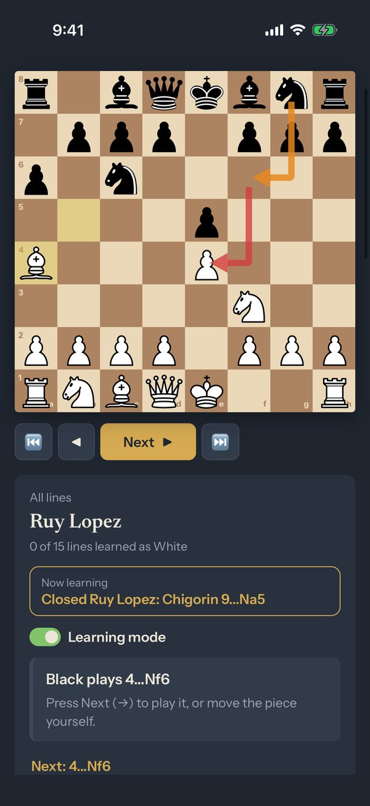
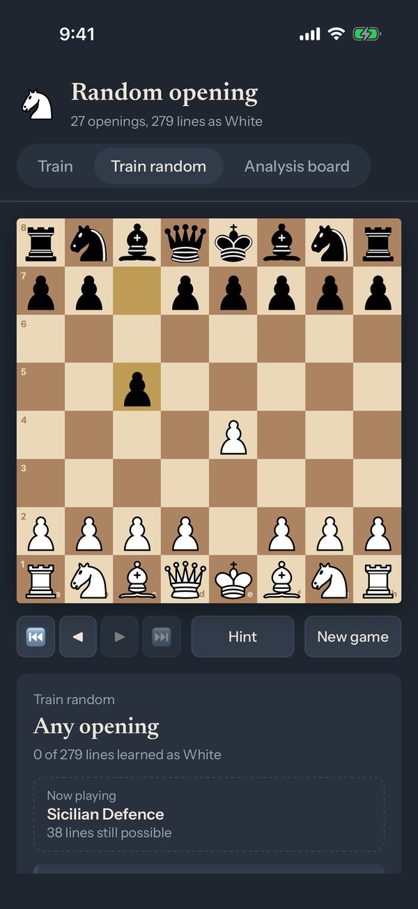
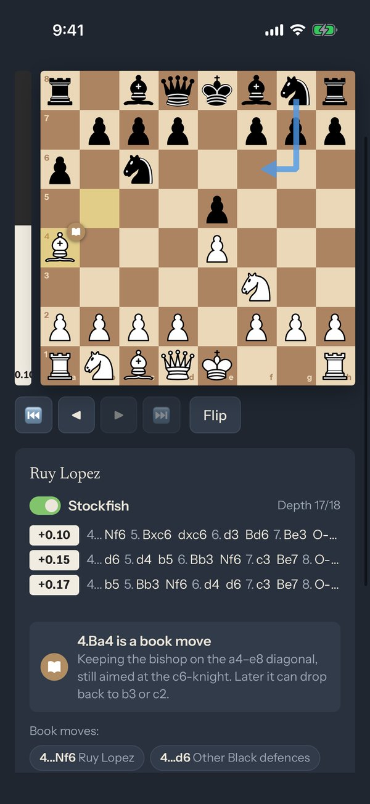

Learn chess openings
Step through 27 openings and hundreds of lines with arrows and short explanations, train them against the computer as White or Black, play any opening from the book in Train random, and check positions on an analysis board with Stockfish. For iPhone and iPad. Works offline, with no account, ads or tracking.



Questions, problems or a line you would like to see in the app? Write to mistrpetrik@gmail.com.